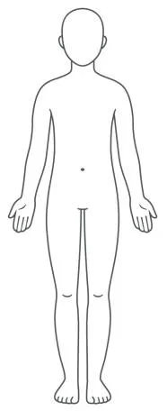
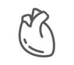
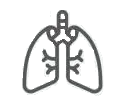
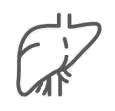

Cliquez sur un point pour explorer.
Découvrez les secrets du corps humain et du monde qui nous entoure.
Projet réalisé avec passion et curiosité. Images et textes inspirés par la beauté du vivant.